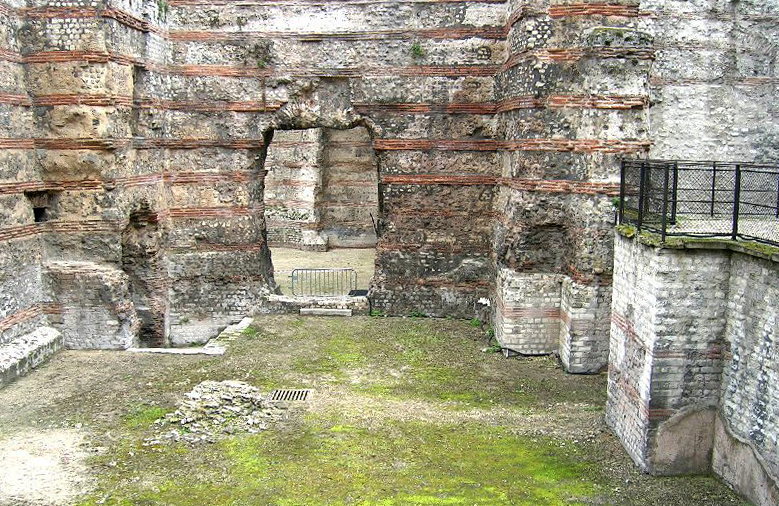
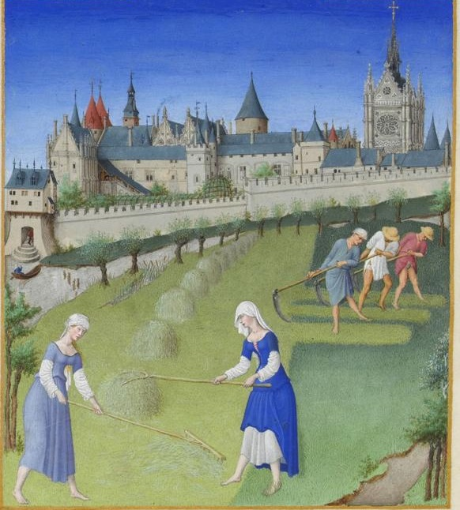
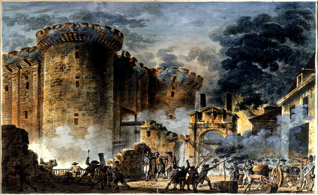
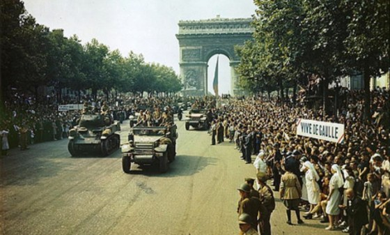

Una ciudad para soñar
París es la capital de Francia y su ciudad más poblada. Capital de la región de Isla de Francia (o "Región Parisina"), constituye el único departamento unicomunal del país.
La ciudad de París, dentro de sus estrechos límites administrativos, tiene una población de 2 273 305 habitantes en 2015.2 Sin embargo, en el siglo XX, el área metropolitana de París se expandió más allá de los límites del municipio de París, y es hoy en día, con una población de 12 405 426 habitantes en 2013, la segunda área metropolitana del continente europeo (después de Londres) y la 28ª del mundo.
La región de París es junto con la de Londres, uno de los núcleos económicos más importantes de Europa.6 Con 607 000 millones de euros (845 000 millones de dólares), produjo más de una cuarta parte del producto interior bruto (PIB) de Francia en 2011.7 La Défense es el principal barrio de negocios de Europa,8 alberga la sede social de casi la mitad de las grandes empresas francesas, así como la sede de veinte de las 100 más grandes del mundo.
Durante el siglo XIX y XX junto con la ciudad de Londres, 9París fue el centro de desarrollo de proyectos arquitectónicos dentro del marco de la Revolución Industrial y sus famosas exposiciones. Ejemplos de ello son: el Mercado de la Madeleine, en 1824; las Grandes Halles iniciadas en 1853 , las Galerie des Machines y la Torre Eiffel ambas realizadas en la exposición de París de 1889.
Es conocida también como la «Ciudad Luz» (la Ville lumière), es el destino turístico más popular del mundo, con más de 42 millones de visitantes extranjeros por año.10 Cuenta con muchos de los monumentos más famosos y admirados del orbe: la Torre Eiffel, la Catedral de Notre Dame, la avenida de los Campos Elíseos, el Arco de Triunfo, la Basílica del Sacré Cœur, el Palacio de Los Inválides, el Panteón, el Arco de la Defensa, la Ópera Garnier o el barrio de Montmartre, entre otros. También alberga instituciones de reconocimiento mundial: el Louvre, el Museo de Orsay y el Museo Nacional de Historia Natural de Francia, así como un extenso sistema de educación superior de prestigio internacional. París ocupa un lugar importante en el ámbito de la cultura, la gastronomía, la moda y el lujo.
La palabra «París» deriva del latín Civitas Parisiorium (‘la ciudad de los parisi’), designación que predominó sobre Lutecia (cuyo nombre completo era Lutetia Parisii). No se conoce con certeza el origen del nombre de los parisii.
París tiene muchos sobrenombres, el más famoso de los cuales es el de «Ciudad de la Luz» (la Ville lumière), nombre que remite a su fama como centro de las artes y la educación, pero también (y tal vez por lo mismo) a su adopción temprana de la iluminación urbana.
El gentilicio de los habitantes de París es «parisino» que en francés se dice parisien [paʁizjɛ̃]. A veces, los franceses que viven fuera de París se refieren a sus habitantes como parigots [paʁigo], pero el término, antaño despectivo, ha sido adoptado por los parisinos y ha perdido esa connotación.
Los parisios, pueblo galo del que se deriva el nombre de París, dominaban el sector cuando las tropas de Julio César sitiaron el lugar. Se cree que los parisios fundaron la ciudad entre 250 a. C. y 200 a. C., aunque se desconoce el lugar exacto del emplazamiento de la ciudad gala; si bien, hay varios indicios que señalan que se establecieron en lo que hoy es la Ile de la Cité, sobre todo por razones de defensa estratégica al estar protegido el asentamiento por los brazos del río Sena que abrazan dicha isla.
En 52 a. C. cuando los romanos toman la ciudad, la rebautizan llamándola Lutecia (Lutetia) y la reconstruyen durante el siglo I en la orilla izquierda del río Sécuana (Sena). En el siglo IV el emperador Juliano el Apóstata estableció su cuartel general durante un invierno en la Isla de Francia.
París toma su nombre actual en el siglo IV y Clodoveo, rey de los francos la hace su capital en 508, tras su victoria sobre los romanos. Durante el siglo IX se construyeron murallas de protección sobre la ribera derecha, mientras que la izquierda fue destruida por los normandos en 885.
Cuando los Capetos consiguen el trono de Francia en 987, París es una de las dos grandes ciudades de su dominio personal. Con Felipe Augusto (1190-1220) París se convierte definitivamente en la capital del reino. Se construye una nueva muralla protegiendo un sector más amplio. En el siglo XIV, Carlos V (1371-1380) crea una muralla incluso mayor que la antes citada.
Entre finales del siglo XVI y comienzos del XVII, Enrique IV construye los primeros conjuntos arquitectónicos modernos como la Place des Vosges. Su sucesor Luis XIII extiende la muralla de Carlos V sobre la orilla derecha. Luis XIV destruye esa muralla y ordena construir en su lugar los primeros grandes bulevares.
A finales del siglo XVIII, la toma de la fortaleza de la Bastilla, que se encontraba en el oriente de la ciudad, se convirtió en el arranque simbólico de la Revolución francesa, un proceso de profunda transformación del país que se había iniciado en París poco antes, durante los Estados Generales de 1789.
Tras proclamarse Emperador, Napoleón Bonaparte se decide por París como capital de su Imperio, luego de haber contemplado a Lyon para tal privilegio. Bajo el reinado de Luis Felipe, la ciudad acelera su ritmo de crecimiento. En este momento, Pierre Daunou redactó la Constitución del Año VIII,
La transformación de París durante el Segundo Imperio de Napoleón III (1852-1870) le dio a la ciudad su fisonomía actual. El emperador comisionó al Barón Haussmann para que ejecutara los cambios necesarios para convertir a París en la ciudad más moderna del mundo en su época. Se demolió gran parte de la ciudad antigua y medieval y se dio paso a los grandes bulevares y a los edificios modernos, el más destacado de los cuales fue la Ópera Garnier. Se construyeron canalizaciones de aguas y otros importantes adelantos en obras públicas. Este periodo llegó a su fin después de la caída del emperador como consecuencia de la derrota sufrida por su ejército en la guerra franco-prusiana, momento tras el cual, la ciudad fue testigo de la formación de la Comuna de París, en el cual los ciudadanos de la ciudad, buscaron fundar un gobierno gestionado por el pueblo, este movimiento fue cruentamente disuelto, después de una heroica resistencia popular. Las décadas de los ochentas y noventas del siglo XIX continuaron dándole a la ciudad su fisonomía más conocida.
París albergó durante la segunda mitad del siglo XIX varias exposiciones universales. La más destacada tuvo lugar en 1889 con motivo de la conmemoración del primer centenario de la revolución. Para este evento fue construida la Torre Eiffel que, aunque debía ser desmontada una vez terminada la exposición, continúa actualmente en su emplazamiento original
El siglo XX se inició con la inauguración de la primera línea del Metro de París, cuyas obras habían empezado en 1898. En 1900 se desarrolló otra Exposición Universal, la más notable de París, para la cual se construyeron obras notables de arquitectura que todavía siguen en pie, tales como el Grand Palais, el Petit Palais, la Estación y ahora Museo de Orsay, el Puente Alejandro III y la Estación de Lyon.
En 1940 la ciudad fue conquistada por la Wehrmacht (ejército de la Alemania Nazi) en el marco de la Segunda Guerra Mundial. París estuvo administrada por las fuerzas de ocupación, que la abandonaron después de cuatro años sin causarle destrozos de consideración, en comparación con los daños sufridos en otras ciudades europeas en esa guerra. Para los aliados, París no era una plaza de importancia estratégica y por ello preferían eludir la liberación de París ya que su objetivo era traspasar pronto el Rin. Sin embargo, el general De Gaulle consiguió convencerlos de la necesidad de liberar París ante el temor de que un régimen comunista se instaurara en la república si la resistencia vencía a los alemanes.18 Tras la liberación, las parisinas sospechosas de colaborar con los alemanes fueron humilladas y rasuradas.19
Durante los mandatos del general De Gaulle de 1958 a 1969, varios acontecimientos políticos tuvieron lugar en la capital. En 1961, una manifestación en favor de la independencia de Argelia fue violentamente reprimida. En 1968, un movimiento estudiantil iniciado en la Universidad de Nanterre desencadena más de un mes de protestas y huelgas al unirse con un amplío movimiento social de reivindicaciones: es el mayo francés. El 13 de mayo, cientos de miles de personas protestaban contra la violencia policial. Después de dos meses de agitación y disturbios, los franceses votaron a favor del general De Gaulle en las elecciones legislativas de junio y volvió la calma parcialmente.
Bajo la administración del presidente François Mitterrand, en la década de 1980 y comienzos de los 90, la ciudad recibió un renovado impulso en su urbanismo e infraestructura. Se renovaron sectores deprimidos de la ciudad, particularmente en barrios de la ribera izquierda y en el barrio de La Villette; se levantaron nuevos edificios emblemáticos como la nueva biblioteca nacional, el Arche de la Défense y el Musée d'Orsay; y se renovaron los accesos al Museo del Louvre.
